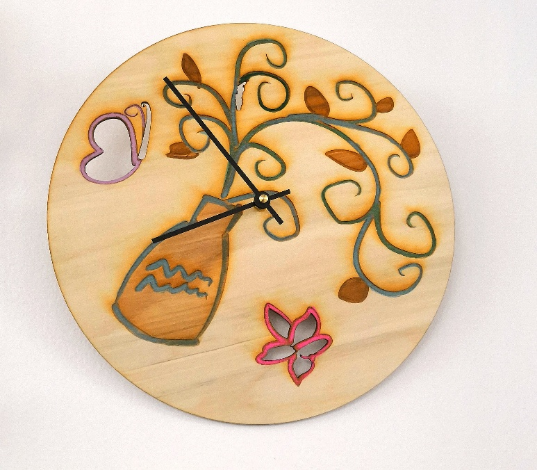
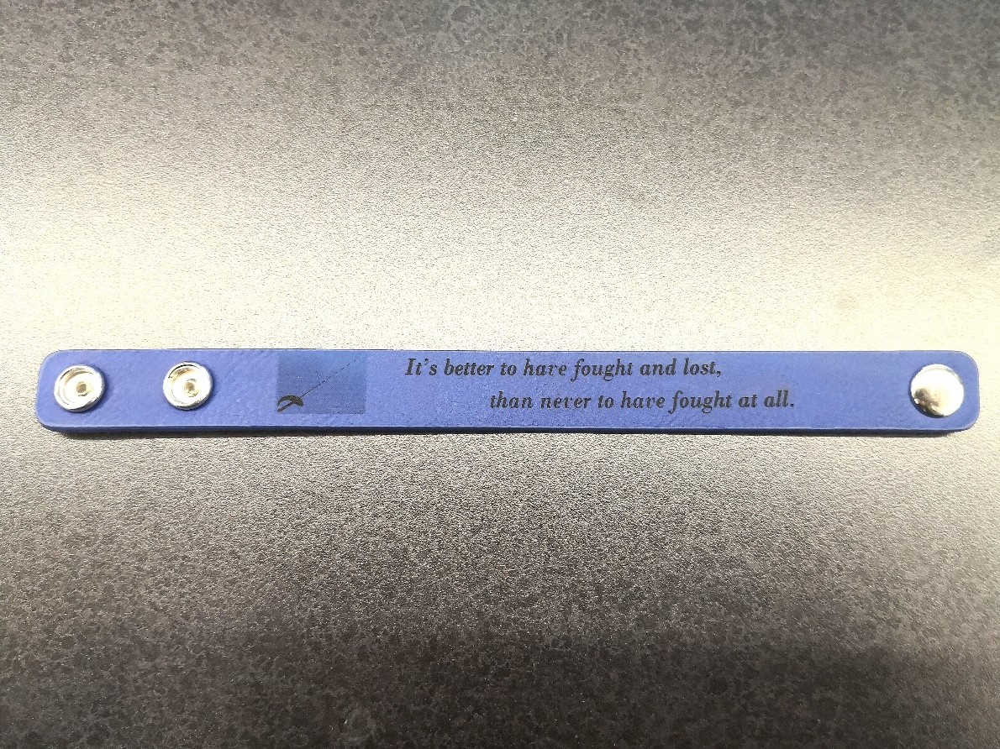

In the class today, our goal was to design and make our own clocks by using laser cutter. I designed my clock on Corel Draw first. The process of designing is actually really interesting althoug I didn't do it very well. After finishing the design and dowload the file in my flash drive, the next thing I need to do is to use laser cutter to cut it. The first thing I need to do with laser cutter is to make the machine "focus", then I let the cutter warm up to make sure it really works by cutting a cardboard. I put a piece of woodboard into the laser cutter to cut the surface of my clock after I setted the speed, power and turned on the air. It's really important to turn the air on. During the process of cutting, the firing may happen (we don't want a fire alarm!). Then after almost 1 hours, I got my clock! The last thing I needed to do is just assembling all different parts of clock together!

In class today, I made my own wristband. The color of the wristband matches the color of the coat that I usually wear! it's super cool. The process of making the wristband is exactly the same process of making the clock. The only difference was that I needed to design the wristband according to its dimensions and change the setting of the laser cutter wristband is made by leather instead of wood

The last thing I needed to do in this rotation is to use laser cutter to do some decoration on the surface of water bottlle. However, laser cutter can only remove the surface color on the water bottle in order to form decoration, so I need to choose black and white images. After finishing the design of decoration in Corel Draw, I needed put some water into water bottle to make sure it would rotate during the laser cutting. Finally, I just brought the water bottle, put it in to laser cutter, changed the setting, then a individualized water bottle was done!